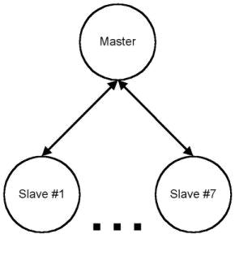

Chapter 8: Bluetooth
8.1 Bluetooth Introduction
Bluetooth is a proprietary open wireless technology standard for exchanging data over short distance from fixed and mobile devices, creating personal area networks(PANs) with high levels of security. Bluetooth was originally conceived as wireless alternative to RS-232 cable. It can connect several devices, overcoming problem of synchronization.Bluetooth uses a radio technology called frequency-hopping spread spectrum, which chops up the data being sent and transmits chunks of it on up to 79 bands of 1 MHz width in the range 2402-2480 MHz. This frequency band has been set aside by international agreement for the use of industrial, scientific, and medical device.
Bluetooth is a standard communications protocol primarily designed for low power consumption, with a short range based on low-cost transceiver microchips in each devices.
| Class | Maximum power | Range |
| mW | dBm (approximately) | |
| Class 1 | 100 | 20~100 meter |
| Class 2 | 2.5 | 4~10 meter |
| Class 3 | 1 | 0~1 meter |
Bluetooth Application
To use Bluetooth wireless technology, a device must able to interpret certain Bluetooth profiles, which are definitions of possible applications and specify general behavior that Bluetooth enabled devices use to communicate with other Bluetooth devices.List of Bluetooth Applications:-
- Wireless control communication between mobile phone and headset.
- Wireless communication among PC and input/out devices, such mouse, keyboard, and printer.
- Transfer file, contacts, reminder, and calendar appointment between devices.
- Replacement for wired serial communication in test equipments, GPS receiver, medical devices, barcode scanner.
- Low bandwidth applications and cable free connection desired.
- Wireless bridge between two Industrial Ethernet (e.g. PROFIBUS) networks.
Bluetooth Version
| Version | Data Rate |
| 1.2 | 1Mbit/s |
| 2.0 + EDR | 3Mbit/s |
| 3.0 + HS | 24Mbit/s |
Bluetooth Networks
a. PicoNet
This is referred to as point-to-point. One of the devices acts as the master and the other as a slave. This ad-hoc network is referred to as a piconet. As a matter of fact, a piconet is any such Bluetooth network with one master and one or more slaves. A diagram of a piconet is provided in Figure 1. In the case of multiple slaves, the communication topology is referred to as point-to-multipoint. In this case, the channel (and bandwidth) is shared among all the devices in the piconet. There can be up to seven active slaves in a piconet. Each of the active slaves has an assigned 3-bit Active Member address (AM_ADDR). There can be additional slaves which remain synchronized to the master, but do not have an Active Member address. These slaves are not active and are referred to as parked. For the case of both active and parked units, all channel access is regulated by the master. A parked device has an 8-bit Parked Member Address (PM_ADDR), thus limiting the number of parked members to 256. A parked device remains synchronized to the master clock and can very quickly become active and begin communicating in the piconet.
b. Scatter Net
You may be wondering what would happen if two piconets were within the same coverage area. For example, you might have a piconet consisting of your cell phone and your PC, while the person in the neighboring cubicle has a piconet consisting of a cell phone, headset, and business card scanner. A diagram is presented in Figure 2 below.Because the two piconets are so close, they have overlapping coverage areas. This scenario is provided for in the Bluetooth specification and is referred to as a scatternet. As a matter of fact, slaves in one piconet can participate in another piconet as either a master or slave. This is accomplished through time division multiplexing. In a scatternet, the two (or more) piconets are not synchronized in either time or frequency. Each of the piconets operates in its own frequency hopping channel while any devices in multiple piconets participate at the appropriate time via time division multiplexing. Returning to the example, you may want to set up your neighbor's business card scanner to also transmit the information that is scanned to your PC so that you will have access to his business contacts information. Of course, this would have to be a mutually agreed upon usage.